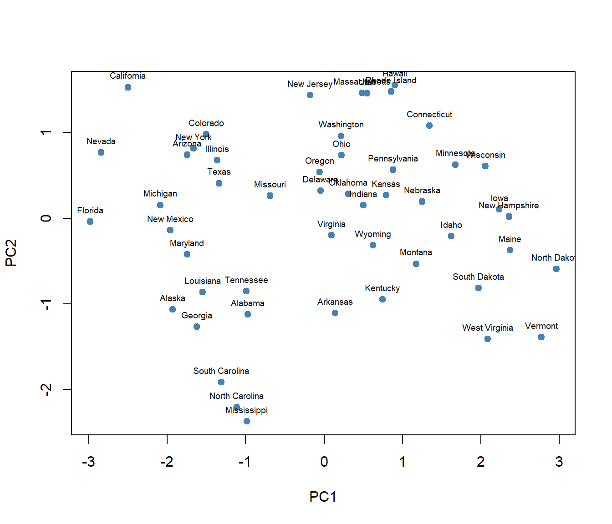

Ejercicio 5. Análisis de Componentes Principales (ACP) sobre USArrests
Autor/a
Eduardo Alanís García
Introducción
En este ejercicio se aplica un Análisis de Componentes Principales (ACP) al conjunto de datos USArrests, incluido de forma nativa en R. El conjunto contiene, para cada uno de los 50 estados de Estados Unidos, la tasa de arrestos por cada 100,000 habitantes en tres delitos (Murder, Assault, Rape) y el porcentaje de población urbana (UrbanPop).
a) Centrado de los datos
Primero se carga el conjunto USArrests y se centra cada variable restándole su media, usando scale(center = TRUE, scale = FALSE). Centrar solo desplaza cada variable para que su nueva media sea cero; esto se verifica con lapply(..., mean), cuyo resultado son valores prácticamente iguales a cero.
Con los datos ya centrados se calcula su matriz de covarianza mediante cov(). Como el centrado no altera la varianza de cada variable, lapply(datos_centrados, var) reproduce las varianzas originales de USArrests — y en este caso son muy distintas entre sí (por ejemplo, Assault varía en una escala mucho mayor que UrbanPop).
Esa diferencia de escalas es justamente el problema que resuelve la estandarización: con scale(center = TRUE, scale = TRUE) cada variable se centra y además se divide entre su desviación estándar, de modo que todas quedan con varianza igual a 1.
Los valores propios quedan ordenados de mayor a menor: el primero corresponde a la dirección de máxima varianza (componente 1), el segundo a la máxima varianza ortogonal a la anterior (componente 2), y así sucesivamente.
d) Componentes principales con prcomp()
En lugar de repetir el procedimiento anterior a mano, R ofrece la función prcomp(), que internamente centra y escala los datos (center = TRUE, scale. = TRUE) y realiza la misma descomposición- El resultado en pca[["x"]] son las puntuaciones (scores) de cada estado sobre cada componente principal.
Para visualizar el resultado se grafican las dos primeras componentes (PC1 y PC2), que concentran la mayor parte de la varianza, y se etiqueta cada punto con el nombre del estado correspondiente.
pca = datos |>prcomp(center =TRUE, scale. =TRUE)componentes = pca[["x"]] |>as.data.frame()plot(x = componentes$PC1, y = componentes$PC2,xlab ="PC1", ylab ="PC2", pch =19, col ="steelblue")text(componentes$PC1, componentes$PC2, labels =rownames(datos), pos =3, cex =0.6)

En el gráfico, los estados que se ubican hacia la derecha (valores altos de PC1) tienden a presentar tasas de criminalidad más altas, mientras que los que se ubican hacia la izquierda presentan tasas más bajas; PC2 distingue principalmente entre estados con mayor o menor población urbana.
e) Varianza explicada
Finalmente, se calcula qué proporción de la varianza total explica cada componente, dividiendo cada valor propio entre la suma de todos ellos:
La tabla anterior se puede comparar directamente con la salida de summary(pca), que reporta la misma información (desviación estándar, proporción de varianza y proporción acumulada) a partir del objeto prcomp. Por último, pca muestra las cargas (loadings) de cada variable en cada componente, que deben coincidir salvo talvez algunos signos, que es arbitrario en un ACP con los vectores_propios calculados en el inciso c).
summary(pca)
Importance of components:
PC1 PC2 PC3 PC4
Standard deviation 1.5749 0.9949 0.59713 0.41645
Proportion of Variance 0.6201 0.2474 0.08914 0.04336
Cumulative Proportion 0.6201 0.8675 0.95664 1.00000
---title: "Ejercicio 5. Análisis de Componentes Principales (ACP) sobre USArrests"author: "Eduardo Alanís García"lang: esformat: html: toc: true code-fold: false code-tools: trueexecute: warning: false message: false---## IntroducciónEn este ejercicio se aplica un **Análisis de Componentes Principales (ACP)** al conjunto de datos `USArrests`, incluido de forma nativa en R. El conjunto contiene, para cada uno de los 50 estados de Estados Unidos, la tasa de arrestos por cada 100,000 habitantes en tres delitos (`Murder`, `Assault`, `Rape`) y el porcentaje de población urbana (`UrbanPop`).## a) Centrado de los datosPrimero se carga el conjunto `USArrests` y se **centra** cada variable restándole su media, usando `scale(center = TRUE, scale = FALSE)`. Centrar solo desplaza cada variable para que su nueva media sea cero; esto se verifica con `lapply(..., mean)`, cuyo resultado son valores prácticamente iguales a cero.```{r}#| label: centradodata("USArrests")datos = USArrestsdatos_centrados = datos |>scale(center =TRUE, scale =FALSE) |>as.data.frame()lapply(datos_centrados, mean)datos_centrados |>head(n =10)```## b) Matriz de covarianza y estandarizaciónCon los datos ya centrados se calcula su **matriz de covarianza** mediante `cov()`. Como el centrado no altera la varianza de cada variable, `lapply(datos_centrados, var)` reproduce las varianzas originales de `USArrests` — y en este caso son muy distintas entre sí (por ejemplo, `Assault` varía en una escala mucho mayor que `UrbanPop`).Esa diferencia de escalas es justamente el problema que resuelve la **estandarización**: con `scale(center = TRUE, scale = TRUE)` cada variable se centra y además se divide entre su desviación estándar, de modo que todas quedan con varianza igual a 1.```{r}#| label: covarianzamatriz_covarianza = datos_centrados |>cov() |>as.data.frame()lapply(datos_centrados, var)datos_estandarizados = datos |>scale(center =TRUE, scale =TRUE) |>as.data.frame()lapply(datos_estandarizados, var)matriz_covarianza_estandarizada = datos_estandarizados |>cov() |>as.data.frame()matriz_covarianza_estandarizada```## c) Valores y vectores propios.```{r}#| label: eigenvalores = matriz_covarianza_estandarizada |>eigen()valores_propios = valores$valuesvectores_propios = valores$vectors |>as.data.frame()valores_propiosvectores_propios```Los valores propios quedan ordenados de mayor a menor: el primero corresponde a la dirección de máxima varianza (componente 1), el segundo a la máxima varianza ortogonal a la anterior (componente 2), y así sucesivamente.## d) Componentes principales con `prcomp()`En lugar de repetir el procedimiento anterior a mano, R ofrece la función `prcomp()`, que internamente centra y escala los datos (`center = TRUE, scale. = TRUE`) y realiza la misma descomposición- El resultado en `pca[["x"]]` son las **puntuaciones (*scores*)** de cada estado sobre cada componente principal.Para visualizar el resultado se grafican las dos primeras componentes (`PC1` y `PC2`), que concentran la mayor parte de la varianza, y se etiqueta cada punto con el nombre del estado correspondiente.```{r}#| label: prcomp#| fig-width: 7#| fig-height: 6#| fig-align: centerpca = datos |>prcomp(center =TRUE, scale. =TRUE)componentes = pca[["x"]] |>as.data.frame()plot(x = componentes$PC1, y = componentes$PC2,xlab ="PC1", ylab ="PC2", pch =19, col ="steelblue")text(componentes$PC1, componentes$PC2, labels =rownames(datos), pos =3, cex =0.6)```En el gráfico, los estados que se ubican hacia la derecha (valores altos de `PC1`) tienden a presentar tasas de criminalidad más altas, mientras que los que se ubican hacia la izquierda presentan tasas más bajas; `PC2` distingue principalmente entre estados con mayor o menor población urbana.## e) Varianza explicadaFinalmente, se calcula qué proporción de la varianza total explica cada componente, dividiendo cada valor propio entre la suma de todos ellos:$$\text{Varianza explicada}_k = \frac{\lambda_k}{\sum_{i=1}^{p} \lambda_i}\qquad\qquad\text{Varianza acumulada}_k = \sum_{i=1}^{k} \text{Varianza explicada}_i$$```{r}#| label: varianzavarianza = valores_propios /sum(valores_propios)varianza_acumulada =cumsum(varianza)data.frame(valores = valores_propios,varianza = varianza |>round(digits =4),varianza_acumulada = varianza_acumulada |>round(digits =4) )```La tabla anterior se puede comparar directamente con la salida de `summary(pca)`, que reporta la misma información (desviación estándar, proporción de varianza y proporción acumulada) a partir del objeto `prcomp`. Por último, `pca` muestra las cargas (*loadings*) de cada variable en cada componente, que deben coincidir salvo talvez algunos signos, que es arbitrario en un ACP con los `vectores_propios` calculados en el inciso c).```{r}#| label: resumensummary(pca)pca```